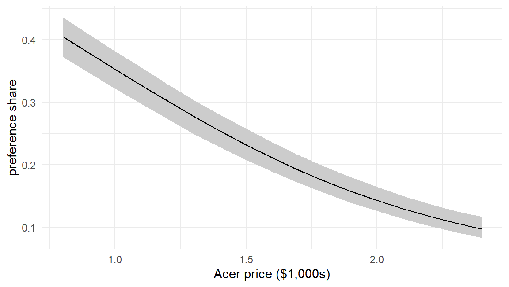
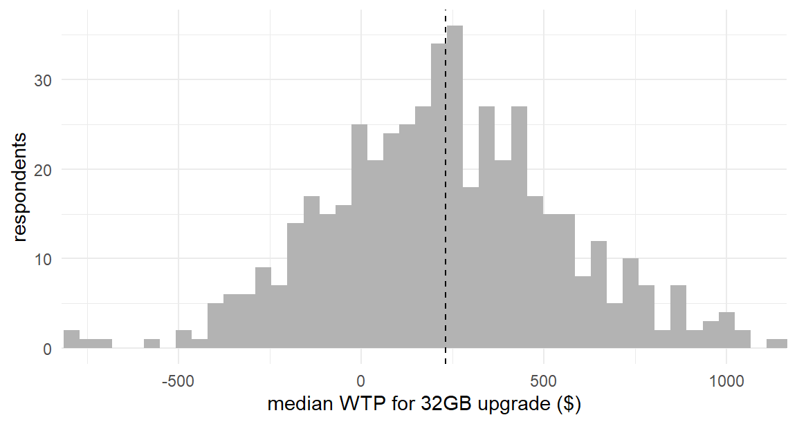

study <- readRDS("../data/laptop_study.rds")
laptops <- study$data
X <- model.matrix(~ brand + ram + screen + price, data = laptops)[, -1]
y <- laptops$choice
task_id <- cumsum(!duplicated(laptops[, c("id", "task")]))
K <- ncol(X)
loglik_mnl <- function(beta, y, X, task_id) {
V <- as.vector(X %*% beta); Vmax <- ave(V, task_id, FUN = max)
eV <- exp(V - Vmax)
sum((V - Vmax - log(rowsum(eV, task_id)[task_id]))[y == 1])
}
mle <- optim(rep(0, K), loglik_mnl, y = y, X = X, task_id = task_id,
method = "BFGS", control = list(fnscale = -1), hessian = TRUE)
vc <- solve(-mle$hessian)
hb <- readRDS("../data/hb_mnl_fit.rds") # bar_draws, sd_draws, B_draws21 Post-Estimation: Inference, WTP, and Market Simulation
No one who commissions a choice study wants a coefficient. They want answers: what is the memory upgrade worth in dollars? What share does our configuration win at $1,499? Who are the price-insensitive customers? Between the estimates of Parts II–IV and those answers sits one more layer of craft — transforming parameters into decision quantities, with uncertainty carried through honestly. The layer is thin (mostly arithmetic on things we already have) but it is where analyses most often go wrong in practice, because the arithmetic has traps with famous names. This chapter builds the transformations and disarms the traps.
Two fits power the chapter, both already on disk: the plain MNL of Chapter 8 (refit inline below — it takes a second) and the HB-MNL draws saved by Chapter 17.
21.1 Inference on Functions of Parameters
The recurring problem: the quantity of interest is \(g(\boldsymbol{\beta})\), not \(\boldsymbol{\beta}\) — a ratio, a probability, a share — and it needs a standard error or interval. Three standard tools, in ascending order of generality.
The delta method linearizes: if \(\hat{\boldsymbol{\beta}} \sim N(\boldsymbol{\beta}, V)\) approximately, then
\[ g(\hat{\boldsymbol{\beta}}) \;\dot\sim\; N\!\left( g(\boldsymbol{\beta}), \; \nabla g' \, V \, \nabla g \right) \tag{21.1}\]
— the function’s gradient maps parameter uncertainty into quantity uncertainty. Exact for linear \(g\), an approximation otherwise, and increasingly strained as \(g\) curves (ratios near a small denominator being the canonical strain). We used a special case in Chapter 13 to convert log-scale standard errors; here is the general workhorse. The one-line reason: a first-order expansion \(g(\hat{\boldsymbol{\beta}}) \approx g(\boldsymbol{\beta}) + \nabla g(\boldsymbol{\beta})'(\hat{\boldsymbol{\beta}} - \boldsymbol{\beta})\) makes \(g(\hat{\boldsymbol{\beta}})\) approximately a linear function of an approximately normal vector, and the variance of a linear function \(\mathbf{a}'\hat{\boldsymbol{\beta}}\) is \(\mathbf{a}' V \mathbf{a}\).
Krinsky–Robb (Krinsky and Robb 1986) simulates instead: draw many \(\boldsymbol{\beta}^{(r)} \sim N(\hat{\boldsymbol{\beta}}, V)\) from the estimated asymptotic distribution, push each through \(g\), and read summaries off the resulting sample. No gradients, no linearization — Chapter 2’s summarize-by-sampling logic applied to frequentist output. It is the poor astronomer’s posterior: same mechanics as the Bayesian version, different justification.
Bayesian draws make the problem dissolve: the posterior sample of \(\boldsymbol{\beta}\) is a posterior sample of \(g(\boldsymbol{\beta})\) after applying \(g\) row by row — the quiet superpower advertised in Chapter 15, no approximation anywhere.
Watch all three on one question — the dollar value of upgrading 16GB to 32GB — and note how they cluster:
\[ g(\boldsymbol{\beta}) = \frac{\beta_{\texttt{ram32}} - \beta_{\texttt{ram16}}}{-\beta_{\texttt{price}}} \times \$1{,}000 \tag{21.2}\]
(Utility difference of the upgrade divided by the utility of a dollar: the scale factor from Section 7.5 cancels in the ratio, which is precisely why ratios are the preferred currency.)
g <- function(b) 1000 * (b[4] - b[3]) / (-b[6])
## delta method: numerical gradient of g (via @sec-optimization's num_grad idea)
grad_g <- sapply(1:K, function(k) {
e <- replace(numeric(K), k, 1e-6)
(g(mle$par + e) - g(mle$par - e)) / 2e-6
})
se_delta <- sqrt(t(grad_g) %*% vc %*% grad_g)
## Krinsky-Robb: draws from the asymptotic normal (@sec-mvnorm transform)
set.seed(210)
kr <- apply(mle$par + t(chol(vc)) %*% matrix(rnorm(K*5000), K), 2, g)
## Bayesian: transform the posterior draws of the population means
bayes <- apply(hb$bar_draws, 1, g)
round(data.frame(
method = c("delta", "Krinsky-Robb", "Bayes (HB bar)"),
estimate = c(g(mle$par), mean(kr), mean(bayes)),
se_or_sd = c(se_delta, sd(kr), sd(bayes)),
lo95 = c(g(mle$par) - 1.96*se_delta, quantile(kr, .025), quantile(bayes, .025)),
hi95 = c(g(mle$par) + 1.96*se_delta, quantile(kr, .975), quantile(bayes, .975))
)[, -1], 0) estimate se_or_sd lo95 hi95
1 217 44 130 305
2 218 45 132 305
3 228 53 127 335Same answer to rounding — roughly $250 with an interval of \(\pm\)$70-ish — with the small differences instructive: delta and Krinsky–Robb share inputs and differ only by linearization; the Bayesian row differs slightly more because it comes from a different model fit (the HB’s population mean) on different data-processing of the same study. When the three disagree materially, the usual culprit is a denominator too close to zero for Equation 21.1’s linearization — at which point trust the sampling-based rows.
21.2 Willingness-to-Pay, and Its Traps
Equation 21.2 is a marginal WTP: the rate at which a consumer trades dollars for an attribute, all else equal. For small, single-attribute comparisons it is the right object. Two traps surround it.
Trap one: the heterogeneous ratio. With HB output it is tempting to compute each person’s WTP by applying Equation 21.2 to their \(\boldsymbol{\beta}_n\) draws. Legitimate — and dangerous, because our population model makes \(\beta_{\text{price},n}\) normal, so some mass sits near (and past) zero, and dividing by near-zero produces WTP draws in the tens of thousands of dollars with the wrong sign. Watch:
wtp_n <- 1000 * (hb$B_draws[, , 4] - hb$B_draws[, , 3]) / (-hb$B_draws[, , 6])
round(c(mean = mean(wtp_n), median = median(wtp_n),
q01 = quantile(wtp_n, .01), q99 = quantile(wtp_n, .99)), 0) mean median q01.1% q99.99%
-155 210 -6552 7865 The mean is inflated (or even nonsensical) while the median and inner quantiles are sane — the textbook signature of a ratio with a denominator crossing zero. Remedies, in rising order of principle: report medians and quantiles, never means; re-estimate with a sign-constrained (lognormal) price coefficient, as flagged in Chapter 17; or reparameterize the whole model in WTP space so the ratio is a parameter rather than a quotient Ben-Akiva, McFadden, and Train (2019). What is not acceptable is publishing the mean of an unconstrained ratio — a mistake with a long paper trail.
Trap two: pseudo-WTP versus market value. The ratio answers “utility compensation for one attribute, one option, no competition.” It does not answer “what is the feature worth to a firm” — in a market, a better product steals share from rivals, rivals reprice, and the value of a feature is an equilibrium object. Allenby et al. (2014) make the accounting vivid: ratio-based “WTP” can overstate what pricing can capture by an order of magnitude or more, and the honest firm-side calculation runs through the market simulator below (and, fully, through equilibrium pricing — beyond our scope but built from exactly these pieces). The economist’s consumer-surplus version for the logit has a closed form worth knowing. The expected maximum utility of a Gumbel choice set is \(\ln \sum_j e^{V_j}\) plus a constant (Euler’s \(\gamma \approx 0.577\), the Gumbel mean — it cancels the moment we take differences between scenarios), a classic result we state rather than derive (Small and Rosen 1981; K. E. Train 2009, sec. 3.5) — Chapter 7’s log-sum, in its third and final starring role. Dividing the change in expected utility by \(-\beta_{\text{price}}\), the marginal utility of a dollar, converts utils to dollars — legitimate because our linear-in-price utility makes that marginal utility constant. The compensating variation for any change in the choice set is therefore:
\[ CV = \frac{ \ln \sum_j e^{V_j^{\text{after}}} - \ln \sum_j e^{V_j^{\text{before}}} }{ -\beta_{\text{price}} } \tag{21.3}\]
## market context: three laptops; upgrade the Acer's memory 16 -> 32
V_of <- function(prods, b) as.vector(prods %*% b)
market <- rbind(acer = c(0, 0, 1, 0, 1, 1.2), # dell,apple,ram16,ram32,screen15,price
dell = c(1, 0, 0, 1, 1, 1.6),
apple = c(0, 1, 0, 1, 0, 2.0))
market2 <- market; market2["acer", 3:4] <- c(0, 1)
cv <- 1000 * (log(sum(exp(V_of(market2, mle$par)))) -
log(sum(exp(V_of(market, mle$par))))) / (-mle$par[6])
round(c(ratio_wtp = g(mle$par), market_cv = cv), 0)ratio_wtp market_cv
217 73 The market-context value is a fraction of the all-else-equal ratio — because in a market with good substitutes, consumers escape a mediocre product rather than pay for its upgrade. Neither number is wrong; they answer different questions, and attaching the right number to the right question is the analyst’s job.
21.3 Market Simulation
The workhorse deliverable. A market simulator takes a hypothetical market — a set of products with attributes — and returns predicted choice shares, built from nothing but the model’s probability formula and the estimated (distribution of) coefficients. With HB draws, shares come with uncertainty attached: compute the share under each posterior draw of each person’s \(\boldsymbol{\beta}_n\), average over people (the market), and summarize over draws (the uncertainty):
simulate_shares <- function(products, B_draws) {
S <- dim(B_draws)[1]; Jm <- nrow(products)
shares <- matrix(NA_real_, S, Jm)
for (s in 1:S) {
V <- B_draws[s, , ] %*% t(products) # persons x products
V <- V - apply(V, 1, max) # @sec-logsumexp, always
P <- exp(V) / rowSums(exp(V))
shares[s, ] <- colMeans(P) # average person = market share
}
colnames(shares) <- rownames(products)
shares
}
sh <- simulate_shares(market, hb$B_draws)
round(rbind(share = colMeans(sh),
lo95 = apply(sh, 2, quantile, .025),
hi95 = apply(sh, 2, quantile, .975)), 3) acer dell apple
share 0.302 0.394 0.304
lo95 0.273 0.368 0.280
hi95 0.329 0.421 0.329Read the structure of simulate_shares() once more, because it encodes the two averaging levels that must not be confused: colMeans(P) averages people (heterogeneity — part of the market, inside each draw), while summaries over s average posterior draws (uncertainty — reported as intervals). Collapse them in the wrong order — computing shares at the average \(\boldsymbol{\beta}\) — and the simulator inherits the MNL’s IIA at the population level, forfeiting exactly the substitution realism the heterogeneity bought (Chapter 13’s aggregation insight, now with money on the line).
Demand curves are the simulator in a loop — sweep one product’s price, watch its share:
grid <- seq(0.8, 2.4, by = 0.1)
dc <- sapply(grid, function(p) {
m <- market; m["acer", 6] <- p
simulate_shares(m, hb$B_draws)[, "acer"]
})
dfd <- data.frame(price = grid, share = colMeans(dc),
lo = apply(dc, 2, quantile, .025),
hi = apply(dc, 2, quantile, .975))
ggplot(dfd, aes(price, share)) +
geom_ribbon(aes(ymin = lo, ymax = hi), fill = "grey80") +
geom_line() +
labs(x = "Acer price ($1,000s)", y = "preference share")
One vocabulary discipline, due to Chapman (2013) and hard-won industry experience: the simulator outputs preference shares — shares of choices among these products, by these respondents, under forced attention to the choice task. Real market shares also run through awareness, distribution, availability, and the option to buy nothing. Preference shares inform decisions powerfully (especially differences between scenarios, where the omitted factors partially cancel); presenting them as market share forecasts is the fastest way for a good model to lose a client’s trust. (The “buy nothing” piece, at least, the model can absorb — the no-choice option of Chapter 22.)
21.4 Elasticities and Substitution
Differentiating the MNL probability gives the textbook elasticity formulas — own-price \(e_{jj} = \beta_p p_j (1 - P_j)\) and the IIA-flavored cross-price elasticity that is identical for all rivals (K. E. Train 2009, sec. 3.6). Rather than memorize formulas, note that the simulator computes any elasticity numerically — nudge a price, difference the shares — and, run on HB draws, it exhibits the realistic substitution the population mixture creates. The Chapter 10 experiment, replayed with estimated parameters:
bump <- market; bump["dell", 6] <- bump["dell", 6] * 0.9 # Dell cuts price 10%
delta <- colMeans(simulate_shares(bump, hb$B_draws)) - colMeans(sh)
round(rbind(base_share = colMeans(sh), change = delta,
pct_change = delta / colMeans(sh)), 3) acer dell apple
base_share 0.302 0.394 0.304
change -0.025 0.045 -0.020
pct_change -0.084 0.114 -0.064Dell’s gain comes disproportionately from the rival whose buyers look most like Dell’s buyers in taste space — proportional-substitution arithmetic broken by heterogeneity alone, no nests required. This table, produced for a client’s actual scenario, is the applied payoff of every substitution-pattern discussion since Chapter 7.
21.5 Using the Individual-Level Estimates
Finally, the deliverable that only Part III could license: person-level quantities. Each respondent’s posterior WTP (medians, per the trap above) supports targeting — and one summary picture enforces this book’s most repeated interpretive warning:
wtp_person <- apply(wtp_n, 2, median) # per-person posterior median
ggplot(data.frame(w = wtp_person), aes(w)) +
geom_histogram(bins = 50, fill = "grey70") +
geom_vline(xintercept = mean(wtp_person), linetype = "dashed") +
coord_cartesian(xlim = quantile(wtp_person, c(.005, .995))) +
labs(x = "median WTP for 32GB upgrade ($)", y = "respondents")
Segments fall out of such distributions directly (the right tail is the premium-upgrade target list, by respondent ID), and every claim about them inherits posterior uncertainty from the draws. This is Chapter 14’s wish list, fully cashed: person-level, honest, decision-ready.
21.6 Key Learnings
- Decision quantities are functions of parameters, and their uncertainty comes from three tools: the delta method (Equation 21.1; fast, linearized), Krinsky–Robb (simulate the asymptotic normal), and posterior draws (exact, trivial). They agree when \(g\) is tame; when they diverge, suspect the linearization.
- Marginal WTP is a scale-free ratio (Equation 21.2) — but ratios of heterogeneous coefficients explode when the denominator crosses zero (report medians; or constrain signs; or move to WTP-space), and ratio-WTP is not market value: the log-sum compensating variation (Equation 21.3) and the simulator answer the market question, usually with much smaller numbers (Allenby et al. 2014).
- The market simulator is the model’s probability formula pointed at hypothetical products; with HB draws it averages people inside each draw and summarizes uncertainty across draws — never share-at-the-average-beta, which resurrects IIA.
- Simulated shares are preference shares, not market shares (Chapman (2013)); differences between scenarios travel better than levels.
- Heterogeneity is the deliverable: person-level WTP distributions, targeting lists, and substitution patterns that put competition where the taste overlap is. The average consumer, meanwhile, describes almost nobody — plot the distribution.